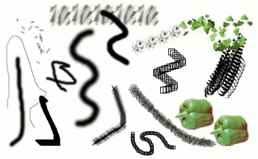

Figure 7.15. Brush strokes example

A number of examples of brushstrokes painted using different brushes from the set supplied with GIMP. All were painted using the Paintbrush tool.
A brush is a pixmap or set of pixmaps used for painting. GIMP includes a set of Paint Tools, which not only perform operations that you would normally think of as painting, but also operations such as erasing, copying, smudging, lightening or darkening, etc.
All of the paint tools, except the ink tool, use the same set of brushes. The brush pixmaps represent the marks that are made by single “touches” of the brush to the image. A brush stroke, usually made by moving the mouse across the image with the left mouse button held down, produces a series of marks spaced along the trajectory, in a way specified by the characteristics of the brush and the paint tool being used.
Brushes can be selected by clicking on an icon in the Brushes dialog. GIMP's current brush is shown in the Brush/Pattern/Gradient area of the Toolbox. Clicking on the brush symbol there is one way of activating the Brushes dialog.
When you install GIMP, it comes with a number of basic brushes, plus a few bizarre ones that serve mainly to give you examples of what is possible (i. e., the "green pepper" brush in the illustration). You can also create new brushes, or download them and install them so that GIMP will recognize them.
GIMP can use several different types of brushes. All of them, however, are used in the same way, and for most purposes you don't need to worry about the differences when you paint with them. Here are the available types of brushes:
- Ordinary brushes
-
Most of the brushes supplied with GIMP fall into this category. They are represented in the Brushes dialog by grayscale pixmaps. When you paint using them, the current foreground color (as shown in the Color Area of the Toolbox) is substituted for black, and the pixmap shown in the Brushes dialog represents the mark that the brush makes on the image.
To create such a brush: create a grayscale image in gray levels, where black is fully visible, white is transparent, with gray levels in between. Do not use transparency for these brushes. Save it with the .gbr extension. Click on the Refresh button in the Brushes Dialog to get it in preview without it being necessary to restart GIMP.
- Color brushes
-
Brushes in this category are represented by colored images in the Brushes dialog. They can be pictures or text. When you paint with them, the colors are used as shown; the current foreground color does not come into play. Otherwise they work the same way as ordinary brushes.
To create such a brush, create a small RGBA image:
Select → from the main menu.
In the Advanced Options, set for example the Color space to RGB color and set Fill with to Transparency.
Draw your image. Contrary to grayscale brushes, transparent areas here will be drawn transparent.
Select → from the main menu to first save your image as an
.xcffile to keep its properties.Select → from the main menu to export the image as a brush with the
.gbrextension.In the Brushes Dialog, click on the button
 .
.
Your brush appears among the other brushes. You can use it immediately, without restarting GIMP.
![[Tip]](images/tip.png)
Tip When you do a Copy or a Cut on a selection, you see the contents of the clipboard (that is the selection) at the first position in the brushes dialog. And you can use it for painting.
- Image hoses / Image pipes
-
Brushes in this category can make more than one kind of mark on an image. They are indicated by small red triangles at the lower right corner of the brush symbol in the Brushes dialog. They are sometimes called "animated brushes" because the marks change as you trace out a brushstroke. In principle, image hose brushes can be very sophisticated, especially if you use a tablet, changing shape as a function of pressure, angle, etc. These possibilities have never really been exploited, however; and the ones supplied with GIMP are relatively simple (but still quite useful).
You will find an example on how to create such brushes in Animated brushes
- Parametric brushes
-
These are brushes created using the Brush Editor, which allows you to generate a wide variety of brush shapes by using a simple graphical interface. A nice feature of parametric brushes is that they are resizable. It is possible, using the dialog, to make key presses or mouse wheel rotations cause the current brush to become larger or smaller, if it is a parametric brush.

Now, all brushes have a variable size. In fact, in the option box of all painting tools there is a slider to enlarge or reduce the size of the active brush. You can do this directly in the image window if you have set correctly your mouse wheel; see Varying brush size.
In addition to the brush pixmap, each GIMP brush has one other important property: the brush Spacing. This represents the distance between consecutive brush-marks when a continuous brushstroke is painted. Each brush has an assigned default value for this, which can be modified using the Brushes dialog.
![[Note]](images/note.png)
|
Note |
|---|---|
|
GIMP can use MyPaint brushes. Please refer to Section 3.11, “MyPaint Brush” for more information. |
|
|
Note |
|---|---|
|
There is a quick method to add a new brush: Section 5.4, “Creating a brush quickly”. |
To add a new brush, after either creating or downloading it, you need to save it in a format GIMP can use. The brush file needs to be placed in the GIMP's brush search path, so that GIMP is able to index and display it in the Brushes dialog. You can hit the button, which reindexes the brush directory. GIMP uses three file formats for brushes:
- GBR
-
The
.gbr("gimp brush") format is used for ordinary and color brushes. You can convert many other types of images, including many brushes used by other programs, into GIMP brushes by opening them in GIMP and saving them with file names ending in.gbr. This brings up a dialog box in which you can set the default Spacing for the brush.A technical specification of the GBR file format can be found on developer.gimp.org.
- GIH
-
The
.gih("gimp image hose") format is used for animated brushes. These brushes are constructed from images containing multiple layers: each layer may contain multiple brush-shapes, arranged in a grid. When you save an image as a.gihfile, a dialog comes up that allows you to describe the format of the brush. See Section 5.2, “Creating animated brushes” for more information about the dialog.A technical specification of the GIH file format can be found on developer.gimp.org.
- VBR
-
The
.vbrformat is used for parametric brushes, i. e., brushes created using the Brush Editor. There is really no other meaningful way of obtaining files in this format. - MYB
-
The
.mybformat is used for MyPaint brushes. Please refer to Section 3.11, “MyPaint Brush” for more information.
To make a brush available, place it in one of the folders in GIMP's brush
search path. By default, the brush search path includes two folders, the
system brushes folder, which you should not use or
alter, and the brushes folder inside your personal
GIMP directory. You can add new folders to the brush search path using the
Brush Folders
page of the Preferences dialog. Any GBR, GIH, or VBR file included in a
folder in the brush search path will show up in the Brushes dialog the
next time you start GIMP, or as soon as you press the
button in the Brushes dialog.
|
|
Note |
|---|---|
|
When you create a new parametric brush using the Brush Editor, it
is automatically saved in your personal
|
There are a number of web sites with downloadable collections of GIMP brushes. Rather than supplying a list of links that will soon be out of date, the best advice is to do a search with your favorite search engine for “GIMP brushes”. There are also many collections of brushes for other programs with painting functionality. Some can be converted easily into GIMP brushes, some require special conversion utilities, and some cannot be converted at all. Most fancy procedural brush types fall into the last category. If you need to know, look around on the web, and if you don't find anything, look for an expert to ask.